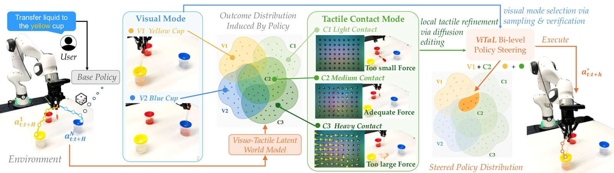
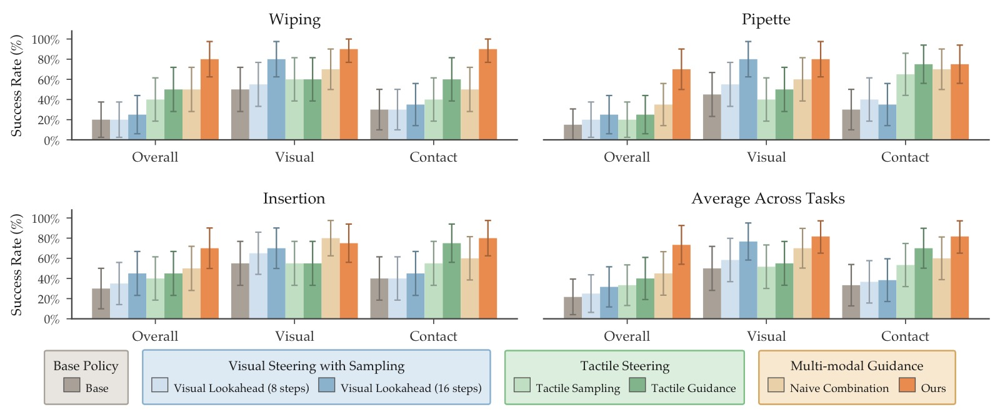
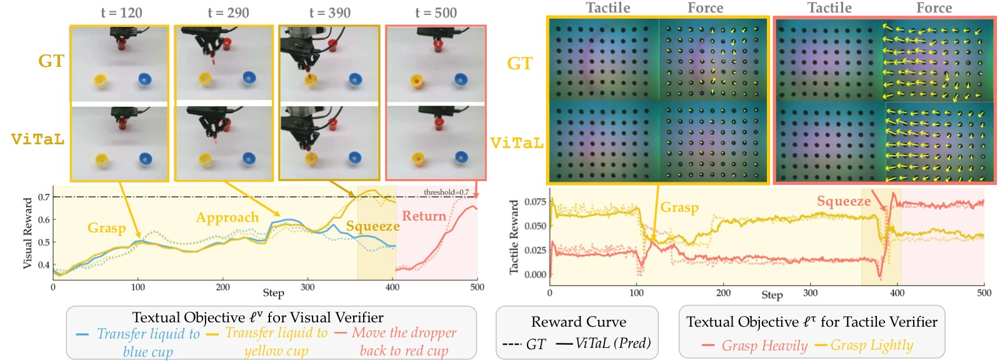
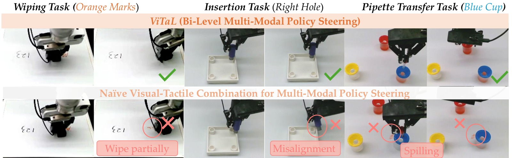
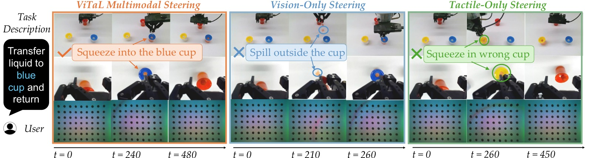

Inference-time Policy Steering via Vision and Touch
论文信息 - 作者：Yilin Wu, Zilin Si, Zeynep Temel, Oliver Kroemer, Andrea Bajcsy - 通讯作者：Andrea Bajcsy (CMU) - 投稿方向：CoRL 2026（preprint） - arXiv ID：2606.14981 - 项目：https://yilin-wu98.github.io/vital_website/
本文基于以下本地材料整理：
- 论文 TeX 源码：
arXiv-2606.14981v1/（主文件：main.tex，按sections/分章节）- 论文插图：
figures/*.pdf（31 张图，含大量 rollout 可视化）- 本文图片导出目录：
assets/vital/
一、核心问题
Inference-time steering 通过在执行前验证候选动作来调整预训练生成式策略。现有方法仅用视觉进行验证，但接触-rich 操作需要同时满足全局任务进展（视觉目标）和局部接触要求（触觉反馈），视觉单独无法胜任。
VITAL (Visuo-Tactile Latent Steering) 提出了一个双层级优化框架：视觉负责"做什么"（模式选择），触觉负责"怎么做"（接触精化）。

图1：VITAL 框架总览。视觉 steering（蓝色）进行长时序模式选择，触觉 steering（绿色）进行短时序接触精化，共享一个 visuo-tactile 潜在世界模型预测多模态未来状态。
二、核心方法
2.1 双层级 Visuo-Tactile Steering
VITAL 将多模态 steering 形式化为一个双层优化问题：
其中 $\bar{\mathbf{a}}_{t:t+H}$ 由视觉级选择：
直觉解释：
- 视觉级（inner optimization）：从 base policy 采样 H=16 步候选动作，用视觉 reward 选出全局最佳行为模式——决定"去哪个杯子/哪个孔/擦哪块区域"
- 触觉级（outer optimization）：在视觉选定模式附近，用触觉 reward 精化前 h=8 步——决定"抓多紧/压多深/对齐多准"
2.2 Visuo-Tactile 潜在世界模型
| 组件 | 实现 |
|---|---|
| 视觉编码器 | DINOv3（冻结） |
| 触觉编码器 | AnyTouch2（冻结，语义对齐的潜在空间） |
| 动态模型 | Transformer，从 $(\hat{\mathbf{z}}_t, \mathbf{a}_{t:t+h})$ 递归预测 $\hat{\mathbf{z}}_{t+h}$ |
| 训练 | 多步潜在预测目标，250 条 rollout 数据 |
推理时不需解码图像——直接在潜在空间预测未来状态，高效 support 推理时的采样-验证循环。
2.3 多模态 Verifier
视觉 Verifier：ROBOMETER (zero-shot)，将预测视觉特征解码为 RGB + 历史观测拼接，评估全局任务进展。
触觉 Verifier：创新设计——文本条件的触觉奖励：
- 使用 AnyTouch2 的语义对齐潜在空间
- 直接将触觉嵌入与 CLIP 文本嵌入做余弦相似度：无需显式训练触觉分类器
阶段依赖的文本目标：VLM (GPT-4o) 将任务分解为阶段级文本目标 $\{\ell_p\}_{p=1}^P$，每阶段有独立的视觉目标 $\ell_p^v$ 和触觉目标 $\ell_p^\tau$。
三、实验与结果
3.1 任务设置
Franka Emika，三个接触-rich 真机任务：
| 任务 | 视觉目标 | 触觉要求 |
|---|---|---|
| Wiping | 选择正确的标记区域 | 维持擦除接触力 |
| Insertion | 选择正确的孔 | 精确对齐 + 插入力控制 |
| Pipette Transfer | 选择正确的目标杯 + 返回 | 抓取稳定性 + 挤压力度 |
每任务 50 条演示训练 base diffusion policy，额外 250 条 rollout 训练世界模型。
3.2 策略性能

图2：VITAL 在三个任务上的对比。(a) 总体成功率——VITAL +51% over base，+33% over unimodal；(b) 视觉成功率；(c) 接触成功率。VITAL 是唯一同时在视觉和接触维度都提升的方法。
| 方法 | Overall | Visual | Contact |
|---|---|---|---|
| Base Policy | baseline | - | - |
| Visual Lookahead (8/16) | +limited | ✓ | ✗ |
| Tactile Sampling/Guidance | +limited | ✗ | ✓ |
| VITAL (ours) | +51% | ✓ | ✓ |
视觉单独 steering 提升视觉成功率但对整体任务完成帮助有限；触觉单独 steering 改善接触行为但无法满足任务目标。VITAL 是唯一同时提升两者的方法。
3.3 Verifier 质量

图3：视觉 verifier（左）识别目标杯选择和阶段切换；触觉 verifier（右）捕获抓取力变化，与 marker-tracking 力估计一致。
| Verifier | Wiping | Insertion | Pipette | Avg. |
|---|---|---|---|---|
| Visual (GT) | 80.0 | 70.0 | 100.0 | 83.3 |
| Visual (Pred) | 82.5 | 72.5 | 100.0 | 85.0 |
| Tactile (GT) | 85.0 | 70.0 | 80.0 | 78.3 |
| Tactile (Pred) | 90.0 | 77.5 | 77.5 | 81.7 |
预测观测上的 reward 精度甚至略高于真实观测——潜在世界模型平滑了观测噪声，使排序更容易。
3.4 双层级 vs 朴素融合

图4：双层级 steering 成功完成三个任务，而将视觉和触觉 reward 简单线性组合的朴素融合在所有任务上均失败。
朴素融合 $\alpha R^v + (1-\alpha) R^\tau$ 失败的原因：视觉和触觉 reward 的量级和噪声特性不同，线性组合无法解耦全局模式选择与局部精化。
3.5 失效模式分析

图5：Pipette 任务中三种 steering 模式的对比。视觉-only（中）：选择了全局合理但触觉不精确的动作（液体洒出）；触觉-only（右）：局部接触良好（抓取力合适）但未对准目标杯（去了蓝杯而非黄杯）；VITAL（左）：同时满足全局和局部要求。
四、关键洞察与技术亮点
-
双层级解耦是核心创新：视觉负责"what"（长时序 H=16 模式选择），触觉负责"how"（短时序 h=8 精化），自然匹配两种模态的互补时间尺度。
-
文本条件的触觉 reward 零样本可用：利用 AnyTouch2 语义对齐潜在空间 + CLIP 文本嵌入，无需训练触觉分类器即可对任意接触描述语言评分。
-
VLM 自动任务分解：GPT-4o 将抽象任务指令分解为阶段级目标——例如"transfer liquid to blue cup and return" → 3 个阶段，每阶段有独立的视觉和触觉子目标。
-
潜在世界模型预测比真实观测更"干净"：预测 reward 精度 (85.0/81.7) 超过真实 reward (83.3/78.3)，因为潜在空间平滑了噪声。
-
朴素多模态融合完全失败：视觉+触觉 reward 的线性组合在所有任务上成功率为 0，证明双层级优化不是锦上添花而是必要条件。
五、局限性
- VLM 任务分解是离线进行的，无法适应部署中的意外情况
- 双层级优化增加了推理计算（每次 steering 需多次世界模型 rollout）
- 仅在两指夹爪 + GelSight 上验证，未涉及其它触觉传感器或末端执行器